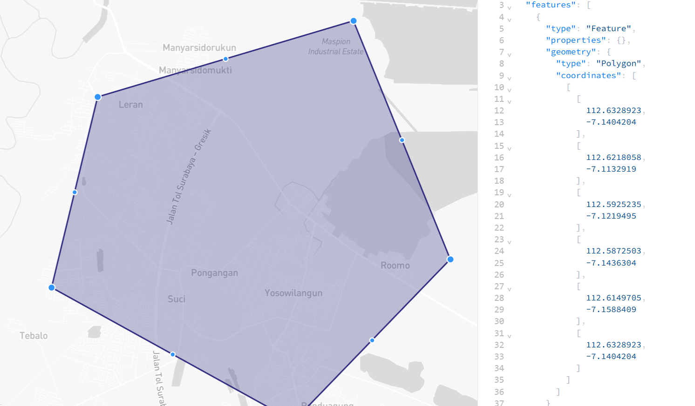
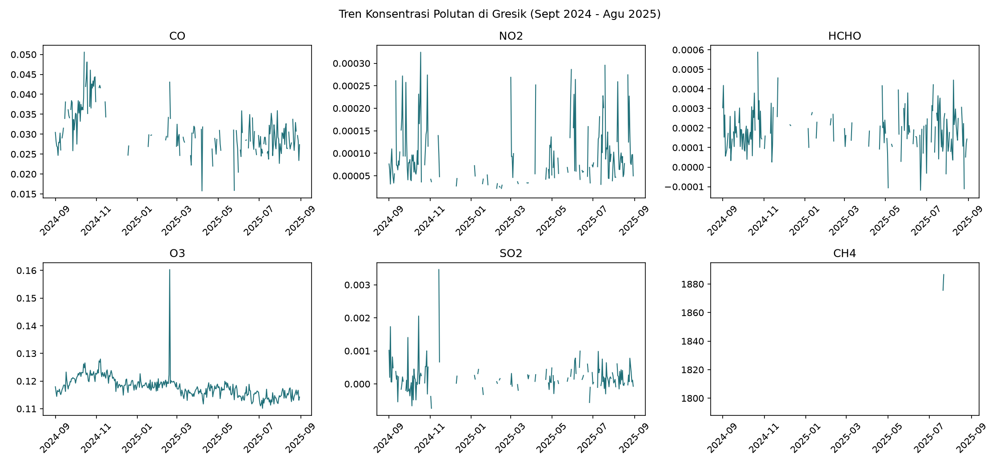
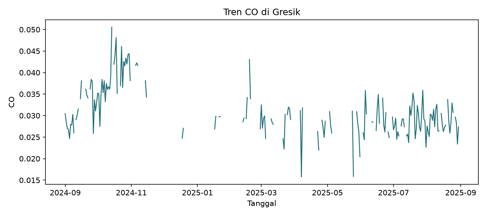
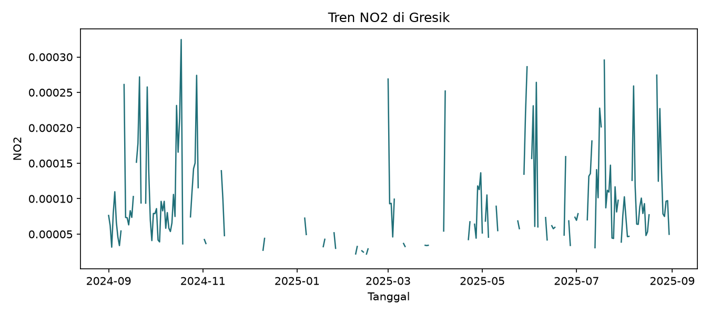
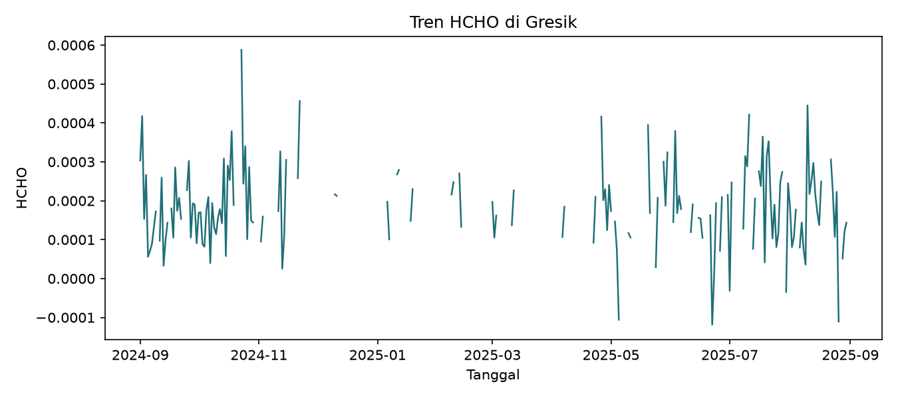
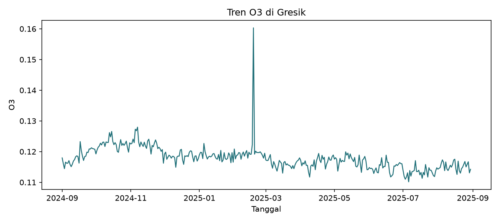
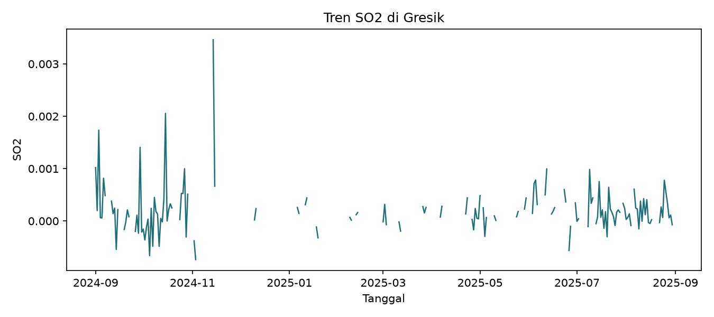
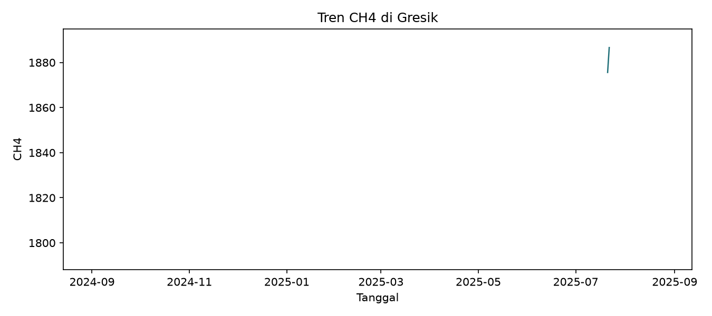

Tugas 1: Crawling Data Polutan di Gresik#
Latar Belakang#
Tugas ini bertujuan untuk melakukan crawling data polutan udara di wilayah studi (Gresik, Jawa Timur) guna mengetahui kemungkinan sumber polutan di daerah tersebut. Data yang dikumpulkan meliputi enam parameter kualitas udara: CO, NO2, HCHO, O3, SO2, dan CH4.
Wilayah Studi#
Wilayah kajian ditentukan menggunakan geojson.io, mencakup area sekitar Maspion Industrial Estate hingga JIIPE/Petrokimia Gresik. Daerah ini dipilih karena kombinasi kawasan industri dan permukiman di sekitarnya, sehingga bisa dijadikan pembanding sumber polusi.

Sumber Data & Tools#
Sumber data: Citra satelit Copernicus Sentinel-5P (TROPOMI)
Platform akses: Google Earth Engine (GEE)
Bahasa/tools: Python (
earthengine-api,pandas,geopandas)Rentang waktu: 1 September 2024 – 31 Agustus 2025
Metodologi#
Menentukan boundary wilayah studi menggunakan geojson.io, diekspor sebagai file
.geojson.Mengakses data Sentinel-5P melalui Google Earth Engine untuk 6 parameter polutan.
Menghitung rata-rata harian tiap parameter dalam batas wilayah studi.
Menyimpan hasil sebagai file
.csvuntuk dianalisis lebih lanjut.
Source code lengkap tersedia di repository ini: crawl_polutan_gresik.py.
Hasil#
Berikut contoh cuplikan data hasil crawling (5 baris pertama):
date |
longitude |
latitude |
CO |
NO2 |
HCHO |
O3 |
SO2 |
CH4 |
|---|---|---|---|---|---|---|---|---|
2024-09-01 00:00:00 |
112.61031217809158 |
-7.135570485497508 |
0.0304486694498692 |
7.635035570773888e-05 |
0.0003033717960758 |
0.1179491449248936 |
0.0010187177168413 |
1864.8089856808915 |
2024-09-02 00:00:00 |
112.61031217809158 |
-7.135570485497508 |
0.0283221724342421 |
6.22000813296959e-05 |
0.0004176957864717 |
0.1160964867406248 |
0.0001971307149182 |
nan |
2024-09-03 00:00:00 |
112.61031217809158 |
-7.135570485497508 |
0.0270111990118031 |
3.159124970164641e-05 |
0.0001532479167651 |
0.1144486533722288 |
0.0017347687258318 |
nan |
2024-09-04 00:00:00 |
112.61031217809158 |
-7.135570485497508 |
0.0267723476046551 |
7.930177442420832e-05 |
0.000266562037892 |
0.116576773897491 |
6.156571865988868e-05 |
nan |
2024-09-05 00:00:00 |
112.61031217809158 |
-7.135570485497508 |
0.0246701717975719 |
0.0001098257449204 |
5.581998054457447e-05 |
0.1162148379541345 |
5.7443397923460565e-05 |
1882.3724557704477 |
Data lengkap tersedia untuk diunduh: gresik_pollutant_data.csv
Tren Keseluruhan#

Tren per Parameter#






Analisis Awal (Dugaan Sumber Polutan)#
CO menunjukkan konsentrasi tinggi di akhir 2024, lalu menurun stabil setelahnya. Hal ini bisa terkait dengan peningkatan aktivitas industri atau transportasi menjelang akhir tahun.
NO2 dan HCHO memperlihatkan fluktuasi dengan beberapa lonjakan signifikan, menandakan adanya sumber emisi yang tidak konsisten, kemungkinan dari aktivitas industri atau pembakaran terbuka.
O3 relatif stabil, namun sempat mengalami puncak tajam di awal 2025, yang bisa dikaitkan dengan kondisi meteorologi tertentu (misalnya suhu tinggi dan radiasi matahari).
SO2 sempat mengalami lonjakan di awal periode, namun cenderung stabil di pertengahan hingga akhir 2025, menunjukkan adanya pengendalian emisi atau berkurangnya aktivitas sumber utama.
CH4 memiliki data terbatas, tetapi terlihat nilai tinggi di pertengahan 2025, yang bisa berasal dari aktivitas pertanian atau limbah organik.
Kesimpulan#
Secara umum, kualitas udara di Gresik sepanjang periode pengamatan menunjukkan:
Polutan CO dan SO2 cenderung menurun, memberi indikasi adanya perbaikan atau pengendalian emisi.
Polutan NO2, HCHO, dan O3 masih fluktuatif, sehingga perlu perhatian lebih karena berpotensi berdampak langsung pada kesehatan masyarakat.
CH4 meski datanya terbatas, tetap penting dipantau karena kontribusinya terhadap efek rumah kaca.
Kesimpulan awal ini menegaskan perlunya monitoring berkelanjutan dan analisis lebih mendalam untuk mengidentifikasi sumber utama polutan, serta merancang strategi pengendalian yang efektif.